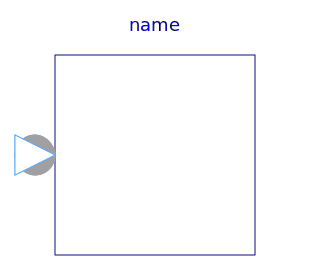

This library defines Complex input and output signals, as well as partial blocks.
| Name | Description |
|---|---|
| 'input Complex' as connector | |
| 'output Complex' as connector | |
| ComplexSO | Single Output continuous control block |
| Multiple Output continuous control block | |
| Single Input Single Output continuous control block | |
| ComplexSI2SO | 2 Single Input / 1 Single Output continuous control block |
| Single Input Multiple Output continuous control block | |
|  ComplexMISO | Multiple Input Single Output continuous control block |
| ComplexMIMO | Multiple Input Multiple Output continuous control block |
| ComplexMIMOs | Multiple Input Multiple Output continuous control block with same number of inputs and outputs |
| ComplexMI2MO | 2 Multiple Input / Multiple Output continuous control block |
| ComplexSignalSource | Base class for continuous signal source |